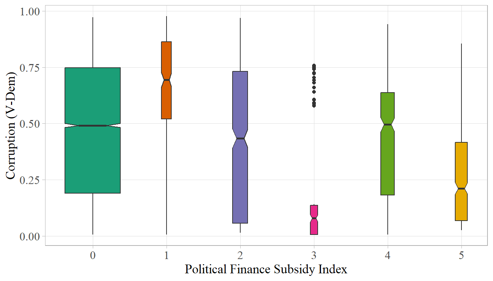
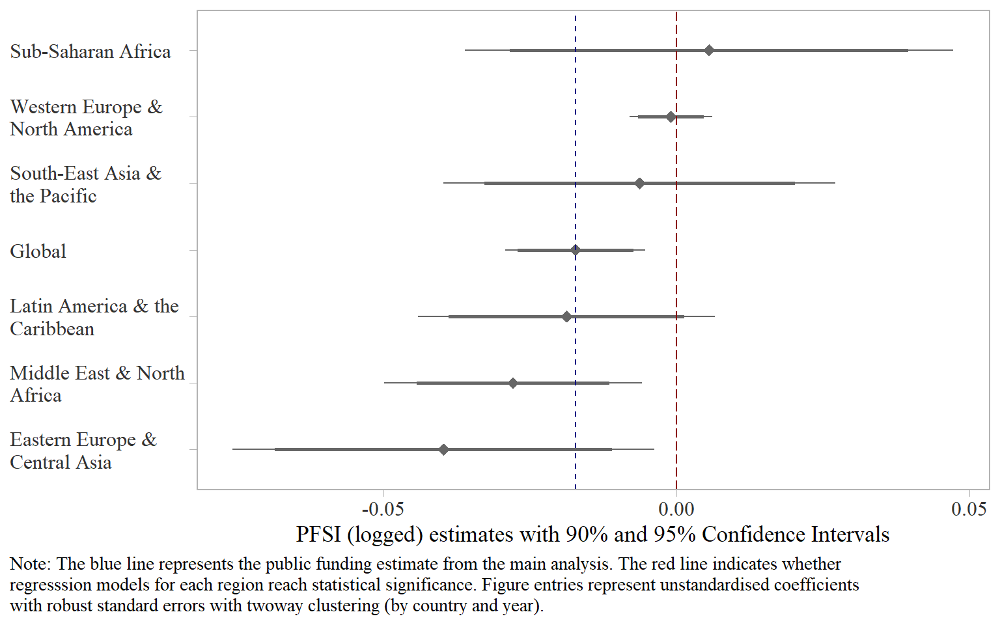

![]()

Replication of Hummel, C., Gerring, J., Burt, T. (2021): ‘Do Political Finance Reforms Reduce Corruption?’
party financing
public funding of parties
political corruption
operationalisation
replication
In this blogpost I replicate the study of Hummel, C., Gerring, J., Burt, T. (2021): ‘Do Political Finance Reforms Reduce Corruption?’ by looking into their measurement of public funding of political parties and checking whether their results hold across different regions
In this blog post, I discuss and replicate Hummel et al. (2021). Their article is perhaps the most ambitious effort to estimate the effect of public funding on political corruption in terms of geographical and temporal coverage. The article stands out from other cross-national studies on the relationship between party financing and corruption due to the authors’ efforts to construct a Political Finance Subsidy Index (PFSI) covering “175 countries and 115 years, generating 12,380 country-year observations” (Hummel et al., 2021, pag., 6), which is truly impressive. However, unlike Casal Bértoa et al. (2014), who rely on a public funding measure reflecting somewhat closer the level of funding political parties receive from the state, PFSI represents a much weaker measure. It represents an aggregate measure of five dichotomous (no = 0, yes = 1) indicators.
whether the law foresees DPF for party statutory activities;
whether this provision has been implemented;
whether the law foresees DPF for electioneering;
whether this provision has been implemented;
whether a majority of political funds derives from (a) private or (b) public sources.
This is a critical issue since the index does not tell us to what extent political parties rely on the state to fund their activities. Hence it only indicates whether a certain type of regulation is present or not. Before replicating the analysis, I will focus a bit on measurement issues since the PFSI has a few other weaknesses that might affect the results.
First, it is redundant because two out of five indicators measure whether the regulations on state subsidies are implemented. Hence, roughly 40% of the data is duplicated. While there might be cases where DPF is foreseen by law but not implemented, these cases are rare. Unlike other dimensions of political financing regulations such as donation and spending limits or transparency obligations, public funding is an entitlement, not a burden and political parties are highly motivated to get money from the public purse, thus, they are interested in implementing the provision of state subsidies. That is why the two PFSI sub-indicators on implementation are redundant.
Second, Hummel et al. (2021) code campaign subsidies in the same way as regular party subsidies, which is not appropriate. Why so? Unlike public funding for statutory party activities, which is provided on an annual basis, electoral subsidies are provided only during election years. However, the authors code electoral subsidies on annual basis. Hence, if one considers that elections are organised on average once in four years, roughly 75% of country-year observations for countries providing electoral subsidies are miscoded for two out of five indicators, which is a lot.
Third, the accuracy of coding for many countries is problematic. While the authors claim that they rely on various sources and country experts and provide in the online appendix data sources, many countries are miscoded. Since my research focuses on party financing in post-communist space, I verified only 27 post-communist countries after 1990 from their dataset for which I have very precise data on public funding. I found that more than half of post-communist regimes are miscoded for different periods. For instance, Moldova effectively introduced public funding for party statutory activities (organisational funding) only in 2016, while Hummel et al. (2021) code it as having public funding from 1991. Likewise, Slovak political parties benefited from public funding both for party statutory and election activities from the early ’90 when Slovakia was part of Czechoslovakia and preserved the system of state subsidies after it became independent in 1993. However, in Hummel et al. (2021) dataset it is coded as having introduced public funding only in 2005. There are other issues related to operationalisation of PFSI, however, I will not discuss them here. Nevertheless, the shortcomings highlighted above raise legitimate doubts on data quality based on which one makes policy recommendations in a critical area of democratic governance.
As corruption measure, they use the political corruption index from the Varieties of Democracy dataset (V-DEM) (Coppedge et al., 2018), which is the only index with time coverage going back in time so far. Figure 1 shows the relationship between the PFSI and V-DEM corruption index. As one may notice, the relationship between PFSI and corruption is not strictly linear.
Using different panel data models, Hummel et al. (2021) found that higher values of the PFSI reduce corruption perception. Below, I replicate their analysis from the model 3 (full model) of table 3 (pag.14) in their study, which is a two-way fixed-effect (TWFE) model. In addition, I conduct the analysis on different subsets of regionally-split data. This will allow me to see whether the negative effect of corruption holds across different regions. If PFSI has a consistent negative effect on corruption, one would expect it to be more or less similar across different regions. To keep things simple, I present the results for the PFSI only, without other control variables, even though I include them into the estimation. Figure 2 shows significant variation in the regional PFSI coefficients.1

As one may notice, the global negative results are driven by four regions: post-communist regimes, MENA, the Caribbean and the Pacific regions. Interestingly, the negative effect of PFSI is statistically significant at 95% only for the MENA region, while for the post-communist polities and the Caribbean they are significant at 90%. For all other regions above the “Entire World”, the effect of PFSI on corruption is positive, although only for East Asia it is statistically significant. This variation casts doubts on the Hummel et al. (2021) analysis. A considerable challenge in this respect is to explain why public funding curbs corruption in some instances while in others it fails to accomplish this task.
References
Casal Bértoa, F., Molenaar, F., Piccio, D. R., & Rashkova, E. R. (2014). The world upside down: Delegitimising political finance regulation. International Political Science Review, 35(3), 355–375. https://doi.org/10.1177/0192512114523302
Coppedge, M., Gerring, J., Knutsen, C. H., Lindberg, S. I., Skaaning, S.-E., Teorell, J., Altman, D., Bernhard, M., Fish, M. S., Cornell, A., Dahlum, S., Gjerløw, H., Glynn, A., Hicken, A., Krusell, J., Lührmann, A., Marquardt, K. L., McMann, K., Mechkova, V., … Ziblatt, D. (2018). V-dem country-year dataset 2018. https://doi.org/10.23696/vdemcy18
Hummel, C., Gerring, J., & Burt, T. (2021). Do Political Finance Reforms Reduce Corruption? British Journal of Political Science, 51(2), 869–889. https://doi.org/10.1017/S0007123419000358
Footnotes
You can replicate the analysis and figures by using this data
pf_data.csvalong with the R code.↩︎